승강기기사 (2016-10-01 기출문제)
1과목: 승강기 개론
1. 승강장 도어에 관한 다음 사항 중 틀린 것은?
- 승강장 도어는 인터록 장치에 의해서 개방 및 폐쇄된다.
- 인터록은 중력이나 압축 스프링 장치에 의한 연결장치로 도어 열림 상태를 유지한다.
- 도어 인터록은 승강장 도어가 닫히면 승강장 측으로부터 접근할 수 없는 쪽에 놓여야 한다.
- 승강장 도어 인터록은 승강기가 정상적인 기동이 되기 전에 도어의 닫힌 상태를 유지시켜야 한다.
(정답률: 68%)

2. 유압 엘리베이터에서 작동유의 압력 맥동을 흡수하여 진통과 소음을 감소시키는 장치는?
- 압력계
- 라인필터
- 사이렌서
- 스트레이너
(정답률: 88%)
3. 권상도르래, 풀리 또는 드럼과 현수로프의 공칭 직경 사이의 비는 스트랜드의 수와 관계없이 몇 이상이어야 하는가?
- 10
- 20
- 30
- 40
(정답률: 85%)
4. 인버터 제어에서 펄스폭 변조(Pulse width modulation)에 대한 설명으로 가장 옳은 것은?
- 교류를 정류한 후 콘덴서 등으로 평활하게 하여 맥동분이 적은 직류를 얻는 것이다.
- 컨버터부에서 출력전압을 제어하고 인버터부에서 주파수를 제어하는 것이다.
- 전력용 반도체 소자를 고주파로 스위칭시켜 스위칭 펄스의 크기를 변환시켜 전압을 제어하는 것이다.
- 전력용 반도체 소자를 고주파로 스위칭하는 방식으로써 펄스의 폭을 변화시켜 전압을 제어하는 방식이다.
(정답률: 72%)
5. 승강기의 도어 시스템 분류 시 lS, 2S, 3S 는 무슨 방식인가?
- 일반 개폐방식
- 상하 개폐방식
- 중앙 개폐방식
- 측면 개폐방식
(정답률: 86%)
6. 카 내부의 하중이 적재하중을 초과하변 경보가 울리고 출입문의 닫힘을 자동적으로 제지하여 엘리베이터가 움직이지 않게 하는 장치는?
- 정지 스위치
- 과부하 감지 장치
- 역결상 검출 장치
- 파이널 리빗 스위치
(정답률: 91%)
7. 엘리베이터 제동기(Brake)의 전자 - 기계 브레이크에 대한 설명으로 틀린 것은?
- 브레이크 라이닝은 불연성이어야 한다.
- 밴드 브레이크가 같이 사용되어야 한다.
- 브레이크슈 또는 패드 압력은 압축 스프링 또는 추에 의해 발휘되어야 한다.
- 자체적으로 카가 정격속도로 정격하중의 125% 를 싣고 하강방향으로 운행될 때 구동기를 정지시킬 수 있어야 한다.
(정답률: 79%)
8. 균형추의 총중량은 빈 카의 자중에 그 엘리베이터의 사용 용도에 따라 적재하중의 35~55%의 중량을 더한 값으로 하는 것이 보통이다. 여기서 적재하중의 몇 %를 더할것인가를 나타내는 것을 무엇이라 하는가?
- 마찰률
- 트랙션 비율
- 균형추 비율
- 오버 밸런스율
(정답률: 82%)
9. 다음 중 일반적인 수평보행기(무빙워크)의 경사도는 몇 도 이하인가?
- 0°
- 12°
- 15°
- 25°
(정답률: 79%)
10. 승강기 검사기준에서 비상용 엘리베이터의 기본요건으로 틀린 것은?
- 비상용 엘리베이터의 출입구 유효 폭은 1000mm 이상이어야 한다.
- 비상용 엘리베이터는 화재 발생 시 소방관의 직접적인 조작 아래에서 사용된다.
- 비상용 엘리베이터는 소방운전 시 모든 승강장의 출입구마다 정지할 수 있어야 한다.
- 비상용 엘리베이터는 소방관이 조작하여 엘리베이터 문이 닫힌 이후부터 60초 이내에 가장 먼 층에 도착하여야 된다.
(정답률: 71%)
11. 전기식 엘리베이터 의 승강로 내부의 구동기에 대한 설명으로 틀린 것은?
- 작업구역의 유효 높이는 4m 이상이어야 하고 카 상부의 가이드 슈와 결합하여야 한다.
- 승강로 내부의 구동기 작업구역의 치수는 설비의 작업이 쉽고 안전하도록 충분하여야 한다.
- 승강로 내부의 구동기 지지대 및 작업구역은 필요로 하는 하중 및 힘에 견디도록 시공되어야 한다
- 승강로 내부의 작업구역에서 다른 작업구역으로 이동하는 공간의 유효 높이는 1.8m 이상이어야 한다.
(정답률: 80%)
12. 엘리베이터용 전동기에 요구되는 사항으로 틀린 것은?
- 충분한 제동력을 갖추어야 한다.
- 방폭구조로서 밀폐형이어야 한다.
- 저소음, 저진동의 특성이 우수해야 한다.
- 정격속도를 만족하는 회전특성을 갖추어야 한다.
(정답률: 80%)
13. 권동식 구동방식의 단점에 해당되지 않는 것은?
- 고양정 적용이 곤란하다.
- 권상동력이 큰 것이 필요하다.
- 지나치게 감기거나 풀릴 위험이 있다.
- 로프와 도르래 사이에 미끄러짐이 생긴다.
(정답률: 60%)
14. 에너지 분산형 완충기에 대한 내용으로 옳은 것은?
- 작동 후에는 변형이 있어도 된다.
- 2.5 gn를 초과하는 감속도는 0.01초보다 길지 않아야 한다.
- 완충기의 가능한 총행정은 정격속도 115% 에 상응하는 중력 정지거리는 [0.135v2 (m)] 이상이어야 한다.
- 카에 정격하중을 싣고 정격속도의 115%의 속도로 자유 낙하하여 완충기에 충돌할 때, 평균 감속도는 1 gn 이하이어야 한다.
(정답률: 75%)
15. 워드 레오나드(Ward -Leonard) 방식의 전동발전기에 관한 설명으로 틀린 것은?
- 직류발전기 축과 유도전동기 축이 직결되어 있다.
- 발전기의 계자전류를 변환시켜 발전전압을 조정한다.
- 전동발전기 1대로 구동할 수 있는 승강기는 2대 이하이다.
- 직류전동기 회전 수는 전기자전압에 비례하고 계자전류에 반비례한다.
(정답률: 65%)
16. 승강로의 구조에 관한 설명으로 틀린 것은?
- 승강로 내에는 각층을 나타내는 표기가 있어야 한다.
- 승강로 내에 설치되는 돌출물은 안전상 지장이 없어야 한다.
- 엘리베이터 의 균형추 또는 평형추는 카와 통 일한 승강로에 있어야 한다
- 승강로에는 화재 시 가스 및 연기의 배출을 위한 통풍구가 있어서는 안 된다.
(정답률: 78%)
17. 에스컬레이터의 특징에 대한 설명으로 틀린것은?
- 대기시간 없이 연속적으로 수송이 가능하다.
- 백화점과 대형마트 등 설치 장소에 따라 구매의욕을 높일 수 있다.
- 전동기 기동 시에 흐르는 대전류에 의한 부하전류의 변화가 엘리베이터에 비하여 적어 전원 설비 부담이 적다.
- 건축상으로 점유 면적이 크고 기계실이 필요하며 건물에 걸리는 하중이 각층에 분산 분담되어 있다.
(정답률: 76%)
18. 간접식 유압 엘리베이터의 특징으로 옳은 것은?
- 일반적으로 실린더의 점검이 곤란하다.
- 부하에 의한 카 바닥의 빠짐이 작다.
- 승강로 소요평면 치수가 작고 구조가 간단하다.
- 실린더 보호관이 필요 없다.
(정답률: 66%)
19. 랙ㆍ피니언식 리프트는 어떤 용도로 많이 사용되는가?
- 병원용 엘리베이터
- 아파트 승객용 리프트
- 빌딩 신축공사용 리프트
- 고층빌딩 승객용 엘리베이터
(정답률: 77%)
20. 엘리베이터용 가이드 레일에 대한 설명으로 틀린 것은?
- 레일의 표준길이는 일반적으로 5m로 한다.
- 호칭은 길이 3m 의 공칭하중으로 8k, 13k, 18k 등으로 표시 한다.
- 엘리베이터 카 또는 균형추가 진동에 의해서 이탈되지 않아야 한다
- 비상정지장치가 작동할 때 카를 안전하게 정지시킬 수 있어야 한다.
(정답률: 79%)
2과목: 승강기 설계
21. 다음 중 카의 조속기에 대한 설명으로 틀린것은?
- 고정된 롤러 형식을 제외한 즉시 작동형 비상정지장치는 0.8m/s 미만에서 작동되어야 한다.
- 고정된 롤러 형식의 비상정지장치는 1m/s 미만에서 작동되어야 한다.
- 정격속도가 1m/s 이하의 엘리베이터에 사용되는 점차 작동형 비상정지장치는 1.5m/s 미만에서 작동되어야 한다.
- 정격속도가 1 m/s를 초과하는 엘리베이터에 사용되는 점차 작동형 비상정지장치는 1.25 V m/s 미만에서 작동되어야 한다.
(정답률: 51%)
22. 유도전동기의 인버터 제어방식에서 10kHz의 캐리어 주파수(carrier frequency)를 발생하여 운전 시의 전동기 소음을 줄 일 수 있는 인버터 전력용 스위칭 소자는?
- SCR
- IGBT
- 다이오드
- 평활콘댄서
(정답률: 69%)
23. 권상기용 전동기의 용량 계산에 관한 사항으로 틀린 것은? ( 단, L : 정격적재하중(kg), V : 승강속도(m/min), η: 엘리베이터의 전효율, F: 오버 밸런스율)
- 용량은
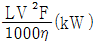
이다. - F값은 균형추 무게 계산 시 필요하다.
- n는 기어식 권상기가 무기어식 권상기보다 더 적다
- 무기어식 권상기의 경우 η는 일반적으로 1:1로핑 방식이 2:1로핑 방식보다 더 크다.
(정답률: 71%)
24. 다음은 비상용 엘리베이터에 대한 설명이다. 틀린 것은?
- 소방운전 스위치는 점검운전 제어보다 우선되어야 한다.
- 1단계 호출 시 문열림 및 비상 경고 버튼은 작동이 가능한 상태이어야 한다.
- 비상용 엘리베이터는 소방운전 시 모든 승강장의 출입구마다 정지할 수 있어야 한다.
- 비상용 엘리베이터 카 내부 둥록버튼 위 또는 근처에 비상용 엘리베이터 알림 표지를 이용하여 선명하게 표시하여야 한다.
(정답률: 59%)
25. 승용 승강기의 설치기준에 대한 설명으로 옳은 것은? (단, 층수가 6층 이상으로서 거실 면적의 합계는 3000m2를 초과한다고 한다.)
- 교육연구시설은 1대에 3000m2를 초과하는 매 2000m2 이내마다 2대의 비율로 가산한 대수
- 판매 및 영업시설은 2대에 3000m2를 초과하는 매 3000m2 이내마다 1대의 비율로 가산한 대수
- 숙박시설 및 업무시설은 2대에 3000m2를 초과하는 매 2000m2 이내마다 2대의 비율로 가산한 대수
- 문화 및 집 회시설( 전시장 및 동ㆍ식물원)은 1대에 3000m2를 초과하는 매 2000m2 이내마다 1대의 비율로 가산한 대수
(정답률: 63%)
26. 백화점에 설치하는 에스컬레이터의 설계 시 유의사항으로 옳지 않은 것은? (단, 완성검사를 기준으로 설계한다.)
- 승강장에 근접하여 설치한 방화셔터가 닫힌 후에 에스컬레이터 승강이 정지하도록 한다.
- 핸드레일은 정상운행 중 운행방향의 반대편에서 450N의 힘으로 당겨도 정지되지 않아야 한다.
- 콤의 끝은 둥글게 하고 콤과 스템, 팔레트 또는 벨트 사이에 끼이는 위험을 최소로 하는 형상이어야 한다.
- 승강장 플레이트 및 콤 플레이트는 눈ㆍ비 등에 젖었을 때 미끄러지지 않게 안전한 발판으로 설계되어야 한다.
(정답률: 65%)
27. 균형추 레일형 브래킷의 재료는?
- T형강, T형으로 절곡한 강판 또는 평강으로 한다.
- T형강, L형으로 절곡한 강판 또는 평강으로 한다.
- L형강, L형으로 절곡한 강판 또는 평강으로 한다.
- L형강, T형으로 절곡한 강판 또는 평강으로 한다.
(정답률: 59%)
28. 엘리베이터의 제어반 내에 사용되지 않는 것은?
- 조속기
- 전자 접촉기
- 제어회로기판
- 배선용 차단기
(정답률: 76%)
29. 엘리베이터의 일주시간(RTT)을 계산하는 방법은?
- ∑(주행시간 + 대기시간 + 승객출입시간 +출발시간)
- ∑(주행시간 + 대기시간 + 도어개폐시간 +출발시간)
- ∑(주행시간 + 도어개폐시간 + 승객출입시간+ 손실시간)
- ∑(주행시간 + 도어개폐시간 + 승객출입시간+ 대기시간)
(정답률: 76%)
30. 엘리베이터용 도어에서 문닫힘 동작 시에 사람 또는 물건이 끼일 때 문이 반전하여 열리도록 하는 장치가 아닌 것은?
- 광전 장치
- 초음파 장치
- 세이프티 슈
- 스프링 클로저
(정답률: 70%)
31. 도어머신에 것은 요구되는 조건과 가장 거리가 먼 것은?
- 소형 경량일 것
- 보수가 용이할 것
- 가격이 저렴할 것
- 직류 모터를 사용할 것
(정답률: 82%)
32. 포지티브 구동식 엘리베이터의 경우, 파이널 리미트 스위치의 작동에 대한 설명으로 틀린 것은?
- 일반 종단정지장치와 종속적으로 작동되어야 한다.
- 구동기의 움직임에 연결된 장치에 의해 작동되어야 한다.
- 평형추가 있는 경우, 승강로 상부에서 카 및 평형추에 의해 작동되어야 한다.
- 평형추가 없는 경우, 승강로 상부 및 하부에서 카에 의해 작동되어야 한다.
(정답률: 66%)
33. 중앙개폐방식 승장도어의 아래 그림에서 G와 F치수(단위 : mm) 기준으로 적합한 것은?
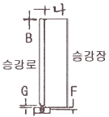
- F는 6 이상, G는 6 이하
- F는 5 이상, G는 5 이하
- F는 4 이상, G는 4 이하
- F는 3 이상, G는 3 이하
(정답률: 53%)
34. 교차되는 두 축 간에 운동을 전달하는 원추형의 기어에 해당되는 것은?
- 베벨 기어
- 내접 기어
- 스퍼 기어
- 헬리컬 기어
(정답률: 70%)
35. 기어감속비 49:2, 도르래 지름 540mm, 전동기 입력 주파수 60Hz, 극수 4, 전동기의 회전 수 슬립이 4%일 때 엘리베이터의 정격속도는 약 몇 m/min인가?
- 90
- 1⑤
- 120
- 150
(정답률: 54%)
36. 설계용 수평진도가 0.4이고, 기기의 중량이 2000kg인 경우 설계용 수직 지진력은 몇 kg 인가?
- 2000
- 1000
- 800
- 400
(정답률: 33%)
37. 조속기 와이어 로프의 허용응력이 200kg/mm2이고, 이 로프의 파단강도가 800 kg /mm2 일 때 안전율은 얼마인가?
- 4
- 5
- 6
- 8
(정답률: 71%)
38. 유압 엘리베이터에서 유량제어밸브를 주 회로에서 분기된 바이패스회로에 삽입하여 유량을 제어하는 회로는?
- 미터 인(meter in ) 회로
- 블리드 인(bleed in) 회로
- 미터 오프(meter off) 회로
- 블리드 오프(bleed off) 회로
(정답률: 68%)
39. 고속 엘리베이터 제어에 많이 쓰이며, 인버터 제어라고 불리는 제어방식은?
- 직류 기어드
- 직류 기어레스
- 교류 2단속도 제어
- 가변전압 가변주파수
(정답률: 78%)
40. 다음 조건에서 코일 스프링의 전단응력은 몇 kg/cm2인가?(오류 신고가 접수된 문제입니다. 반드시 정답과 해설을 확인하시기 바랍니다.)
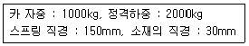
- 약 5550
- 약 6590
- 약 7490
- 약 8490
(정답률: 30%)
3과목: 일반기계공학
41. 천연고무 중 S의 첨가량이 15% 이하인 것을 무엇이라 하는가?
- 에보나이트
- 연질고무
- 합성고무
- 스티렌ㆍ부타디엔고무
(정답률: 64%)
42. 지름이 d 인 원형 단면의 중심점에 대한 극관성 모벤트(Polar moment of inertia)는?
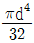
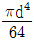
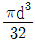
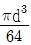
(정답률: 43%)
43. 압력의 단위 환산 표기가 올바른 것은?
- 1 bar = 109 N/m2
- 1 kgf/m2 = 100 N/m2
- 1 N/m2 = 1 Pa
- 1 atm = 100 Pa
(정답률: 61%)
44. 아크 용접기의 수하특성에 대한 설명으로 옳은 것은?
- 전류가 증가하면 용접기 온도가 증가하는 특성
- 전류가 강하면 전력이 증가하는 특성
- 부하 전류가 증가하면 단자 전압이 증가되는 특성
- 부하 전류가 증가하면 단자 전압이 저하되는 특성
(정답률: 54%)
45. 유체를 한쪽으로만 흐르게 하고 역류가 되면 즉시 자동적으로 밸브가 닫히게 되어 유체가 역류되는 것을 막아 주는 밸브는?
- 릴리프 밸브
- 감압 밸브
- 무부하 밸브
- 체크 밸브
(정답률: 73%)
46. 측정할 때 생기는 오차 중 계통적 오차의 원인이 아닌 것은?
- 개인오차
- 우연오차
- 환경오차
- 측정기 고유오차
(정답률: 61%)
47. 세라믹(ceramic)의 일반적인 성질에 대한 설명으로 틀린 것은?
- 단단하고 취성이 있다.
- 융점이 낮다.
- 내열성, 내산화성이 좋다.
- 열전도율이 낮다.
(정답률: 51%)
48. 프레스 가공에 있어서 전단가공에 속하지 않는 것은?
- slotting
- piercing
- upsetting
- blanking
(정답률: 60%)
49. 푸아송의 비와 관련한 설명에서 ( )에 들어갈 숫자로 옳은 것은?
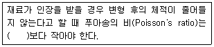
- 0.1
- 0.3
- 0.5
- 1.0
(정답률: 58%)
50. 드릴링 머신으로 접시머리 나사의 머리 부분을 조립하기 위해 테이퍼 원통형으로 작업은?
- 보링
- 카운터 싱킹
- 리밍
- 스폿 페이싱
(정답률: 57%)
51. 단순보에서 굽힘 응력을 σ, 굽힘 모멘트를 M, 단면계수를 Z라고 할 때 굽힘 모멘트 M을 구하는 식은?
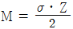
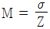
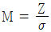
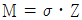
(정답률: 55%)
52. 지름이 20mm인 연강봉이 3140N의 인장하중을 받는다면 이 봉에 작용하는 인장응력은 약 몇 MPa인가?
- 7.5
- 10
- 40
- 157
(정답률: 50%)
53. 나사에서 3줄 나사의 피치가 3mm 일 때 120° 회전시키면 축방향으로의 이동거리는 얼마인가?
- 1mm
- 2mm
- 3mm
- 6mm
(정답률: 60%)
54. 주철의 일반적인 특성을 나타낸 것으로 틀린것은?
- 용융점이 낮고 유동성이 좋다.
- 압축강도는 크나 인성이 낮다.
- 절삭성 및 내마멸성이 좋지 않다
- 가단성, 전성 및 연성이 적다.
(정답률: 56%)
55. 주형 제작에 사용되는 탕구계(gating system)의 구성요소에 속하지 않는 것은?
- 열풍로
- 주탕컵
- 쇳물받이
- 탕도
(정답률: 59%)
56. 베어링 호칭번호 '7206ZNR' 에서 06은 무엇을 표시하는가?
- 베어링 계열 기호
- 치수 계열
- 틈새 기호
- 안지름 번호
(정답률: 64%)
57. 브레이크의 마찰계수를 μ, 드럼의 원주 속도를 v, 접촉면의 압력을 p라 할 때 브레이크 용량을 계산하는 식은?
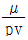
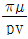
- μpv
- πμpv
(정답률: 59%)
58. 다음중 로프를 걸어 중량물을 달아 올리기 위해 사용하는 볼트는?
- 아이(eye) 볼트
- 탭(tap) 볼트
- 관통 볼트
- 기초 볼트
(정답률: 72%)
59. 다음 중 평벨트 전동장치와 비교한 V벨트 전동장치의 일반적인 특징이 아닌 것은?
- 미끄럼이 적고 속도비가 크다.
- 이음이 없고 운전이 정숙하다
- 장력이 작으므로 베어링에 걸리는 부하가 적다
- 엇걸기로도 작동이 가능하다.
(정답률: 55%)
60. 2개의 입구와 1개의 공통 출구를 가지고 있으며, 출구는 입구 압력의 작용에 의하여 한쪽 방향에 자동적으로 접속되는 밸브는?
- 변환 밸브
- 스로틀 밸브
- 셔틀 밸브
- 체크 밸브
(정답률: 49%)
4과목: 전기제어공학
61. 다음 회로의 전압V와 전류I의 전달함수를 표현한 신호흐름선도는?
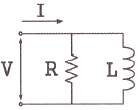
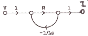
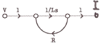
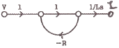
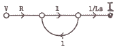
(정답률: 48%)
62. 다음 중 그림과 등가인 게이트는?
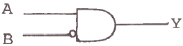
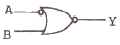
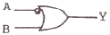
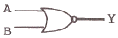
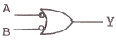
(정답률: 67%)
63. 교류(Alternating current)를 나타내는 값 중 임의의 순간의 크기를 나타내는 것은?
- 최대값
- 평균값
- 실효값
- 순시값
(정답률: 69%)
64. 제동계수 중 최대 초과량이 가장 큰 것은?
- δ = 0.5
- δ = 1
- δ = 2
- δ = 3
(정답률: 61%)
65. 직류기를 구성하는 3요소로 옳은 것은?
- 계자, 보극, 정류자
- 브러시, 계자, 전기자
- 정류자, 전기자, 계자
- 보극, 전기자, 브러시
(정답률: 65%)
66. 서보 전동기(Servo motor)는 다음의 제어기기 중 어디에 속하는가?
- 증폭기
- 변환기
- 검출기
- 조작기기
(정답률: 62%)
67. 100 V의 전원에 접속시켜 500W의 전력을 소비하는 저항을 200V의 전원으로 바꾸어 접속하면 소비되는 전력은 몇 W인가?
- 250
- 500
- 1000
- 2000
(정답률: 48%)
68. 아날로그 신호로 이루어지는 정량적 제어로서 일정한 목표값과 출력값을 비교ㆍ검토하여 자동적으로 행하는 제어는?
- 피드백 제어
- 시퀀스 제어
- 오픈루프 제어
- 프로그램 제어
(정답률: 66%)
69. 그림과 같이 2개의 전력계를 사용하여 전동기의 소비전력을 측정하였더니 W1 = 500W, W2 = 250W가 지시되었다. 이 전동기가 소비하는 전력은 몇 W 이며, 역률은 얼마인가?
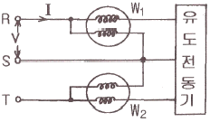
- 전력 : 250, 역률 : 0.5
- 전력 : 250, 역률 : 0.866
- 전력 : 750, 역률 : 0.866
- 전력 : 750, 역률 : 0.5
(정답률: 51%)
70. 그림과 같은 제어계에서 ⓐ 부분에 해당하는 것은?
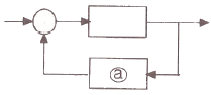
- 조절부
- 조작부
- 검출부
- 비교부
(정답률: 69%)
71. 어떤 회로의 유효전력이 80W, 무효전력이 60 Var 이면 역률은 몇 % 인가?
- 20
- 60
- 80
- 100
(정답률: 56%)
72. 그림에서 3개의 입력단자에 각각 1을 입력하면 출력단자 A 와 B의 출력은?
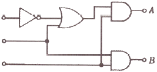
- A = 0, B = 0
- A = 1, B = 0
- A = 1, B = 1
- A = 0, B = 1
(정답률: 61%)
73. 서보 전동기의 특징으로 틀린 것은?
- 신뢰도가 높다.
- 속응성이 충분히 높다.
- 발열이 작아 냉각방식이 필요하다.
- 기동, 정지, 역전 동작을 자주 반복할 수 있다.
(정답률: 68%)
74. 전동기를 전원에 접속한 상태에서 중력부하를 하강시킬 때 속도가 빨라지는 경우 전동기의 유기기전력이 전원전압보다 높아져서 발전기로 동작하고 발생전력을 전원으로 되돌려 줌과 동시에 속도를 점차로 감속한 경제적인 제동법은?
- 회생제동
- 역전제동
- 발전제동
- 유도제동
(정답률: 68%)
75. 온도를 전압으로 변환시키는 것은?
- 광전관
- 열전대
- 포토다이오드
- 광전다이오드
(정답률: 75%)
76. 그림에서 E, R1, R2를 일정하게 하고 R을 변화시킬 때 R의 소비전력이 최대가 되는 R의 값은?
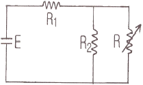
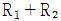
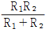
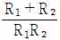
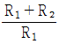
(정답률: 63%)
77. 어떤 제어계의 단위계단 입력에 대한 출력 응답이 c(t) = 1 - e-2t로 되었을 때 지연시간 Td(s)는 약 얼마인가?
- 0.346
- 0.478
- 0.693
- 0.739
(정답률: 24%)
78. 전기력선에 관한 성질로 옳은 것은?
- 상호 교차한다.
- 같은 (+)전하일 경우 흡입한다.
- 도체 표면에서 수직으로 나온다.
- 음전하에서 시작하여 양전하로 끝나는 연속선이다.
(정답률: 54%)
79. 다음 중 자동조정(automatic regulation)에 해당되는 것은?
- 벤서기록계
- 로켓(rocket)
- 증기 기관의 조속기
- 공업용 로봇(robot)
(정답률: 50%)
80. 그림과 같은 정류회로에 L과 C를 부착하여 파형을 개선시키는 방법으로 툴린 것은?
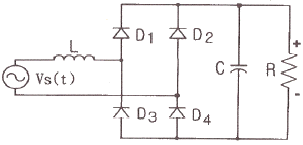
- L 이 클수록 직류전류는 평활해진다.
- C가 클수록 직류전압은 평활해진다.
- 입력이 주기적인 파형이라면 L양단의 전압강하는 없다.
- C가 클수록 다이오드의 전류 용량은 적게 해야 한다.
(정답률: 42%)